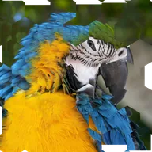

六边形块位移

将图层分成六边形块，使每块内的画面向随机方向移动。
设置
| 设置项 | 类型 | 范围 | 默认值 |
|---|---|---|---|
| 强度 | 数字 | 0 至 1 | 0.1 |
| 偏移 | 点（X, Y） | -5000 px 至 5000 px | 0 px, 0 px |
| 数量 | 数字 | 0.5 至 200 | 10 |
| 角度 | 角度 | -3600° 至 3600° | 0° |
| 随机种子 | 数字 | 0 至 5 | 0 |

将图层分成六边形块，使每块内的画面向随机方向移动。
| 设置项 | 类型 | 范围 | 默认值 |
|---|---|---|---|
| 强度 | 数字 | 0 至 1 | 0.1 |
| 偏移 | 点（X, Y） | -5000 px 至 5000 px | 0 px, 0 px |
| 数量 | 数字 | 0.5 至 200 | 10 |
| 角度 | 角度 | -3600° 至 3600° | 0° |
| 随机种子 | 数字 | 0 至 5 | 0 |